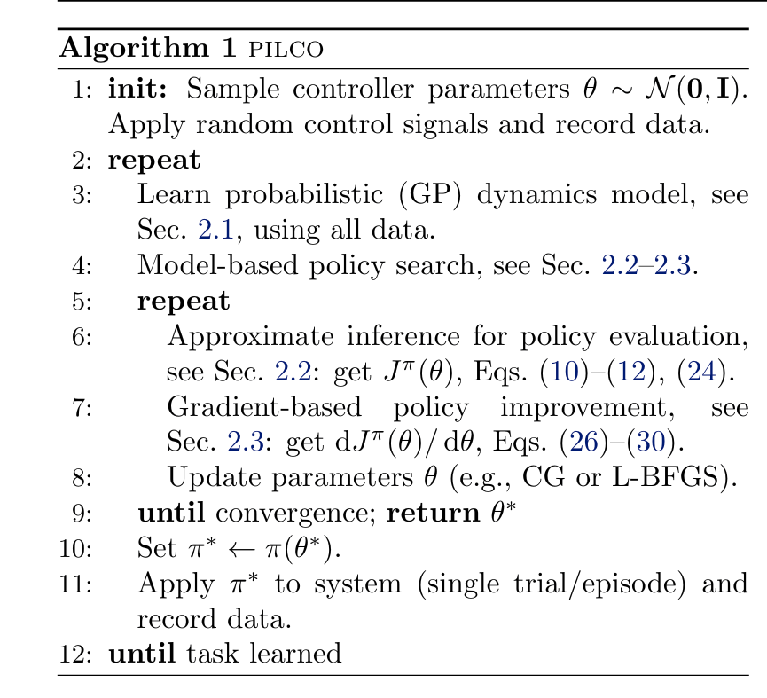

Blog
|  |
Understanding PILCO
I hope this blog can help more people understand PILCO easier... |
|---|

|
Brief Survey of Applications of Gaussian Process in Robot Learning
Gaussian Process is interesting... |
|---|
|
How did I renew my F1 visa during ISER in Argentina?!
I'm so stupid that I forgot my F1 visa will expire exactly when I go back to the USA after ISER which means my only option is to renew my visa in Argentina... |
|---|